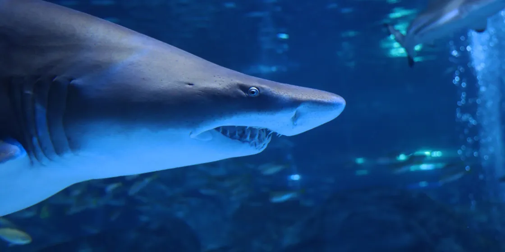
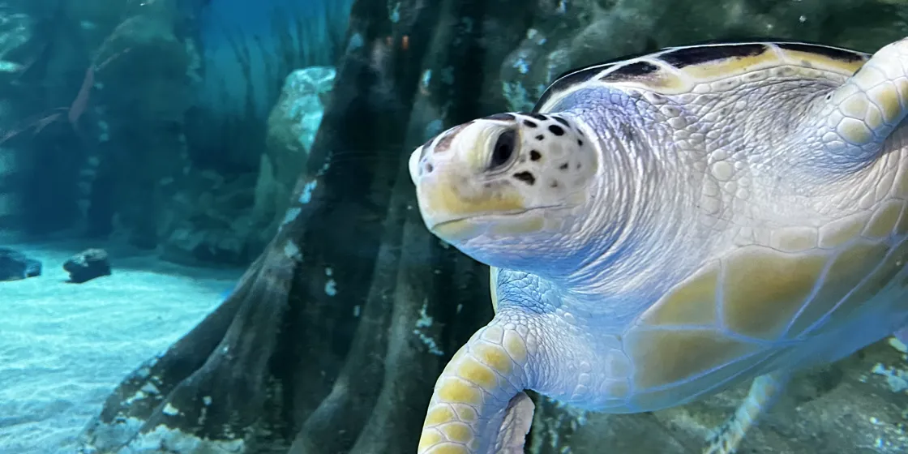
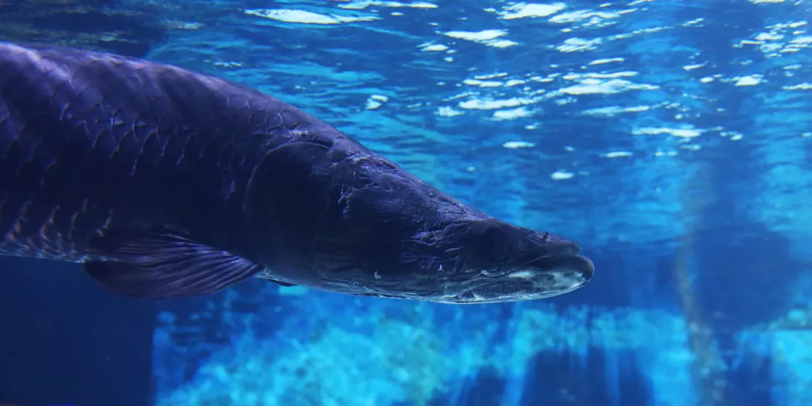
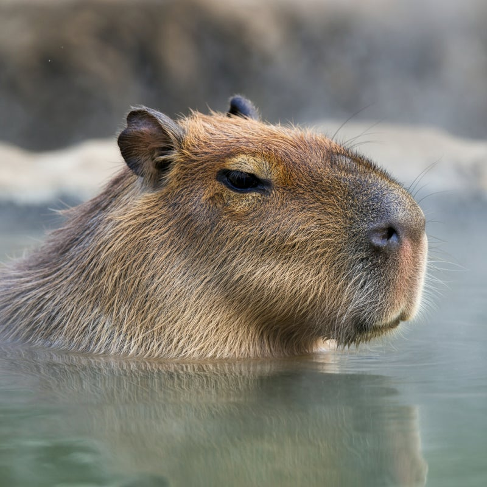
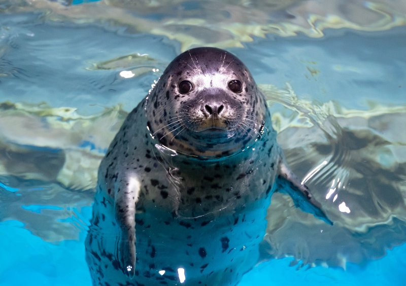
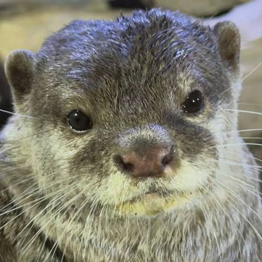

해양 생물 갤러리
두 개의 수족관에서 다양한 바다 친구들을 만나보세요
COEX 아쿠아리움

샌드타이거샤크
등은 회갈색이고 배는 흰색이에요!
머리는 뽀죡하면서 아래위로는 원추형이랍니다! 눈은 작고 순막이 없어요.

푸른바다거북
등갑(등껍질)의 색이 아는 등갑 아래에 자리 잡고 있는
지방의 색이 푸른빛을 띈다고 하여 푸른바다거북이로 불려지고 있어요

피라루쿠
물고기 (pira)와 붉은 열매라는(arucu)의미의 원주민 합성어로서,
꼬리지느러미가 붉은색으로 반짝이는 얼룩무늬가 있어서 지어진 이름이에요.
LOTTE 아쿠아리움

카피바라
남아메리카의 강과 습지에 사는 물과 육지를 오가며 생활하는 반수생 포유류 입니다.

참물범
작은 구멍의 귀와, 두꺼운 지방층도 있어 체온 유지에 유리합니다.
넉넉한지방 덕분에 통통하고 귀여운 모습을 가지게 되었습니다.

작은발톱수달
수달 종류 중에서 크기가 가장 작은 종입니다.
귀여운 외모와는 달리 날카로운 이빨을 가지고 있어서 사냥 능력이 뛰어납니다.